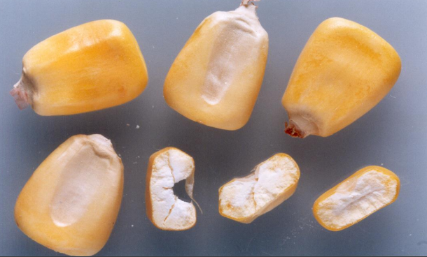
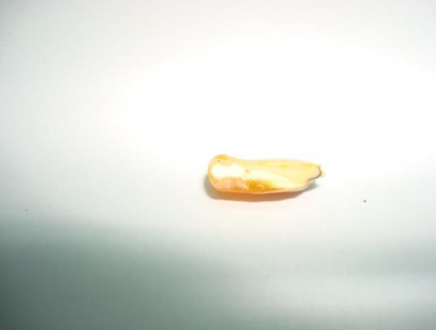
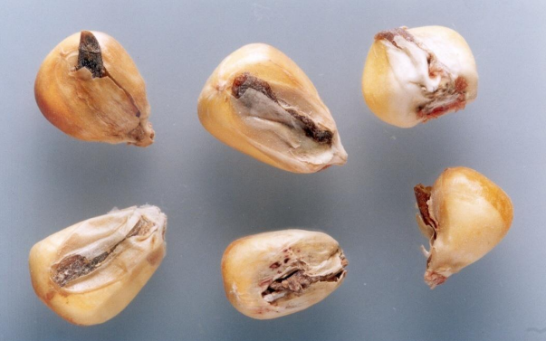
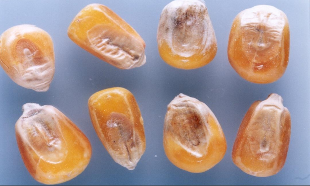
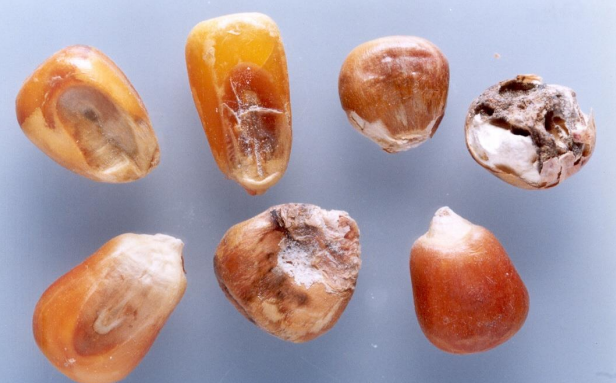
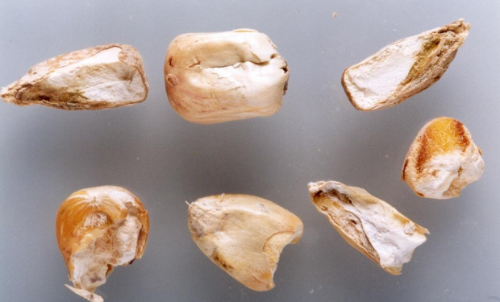
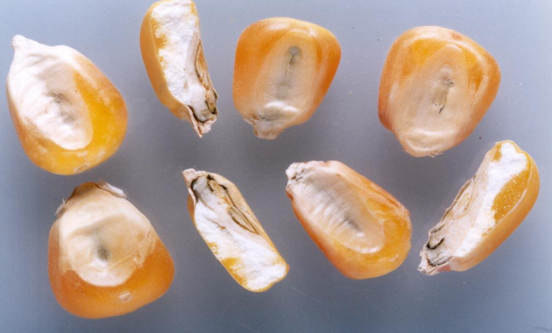
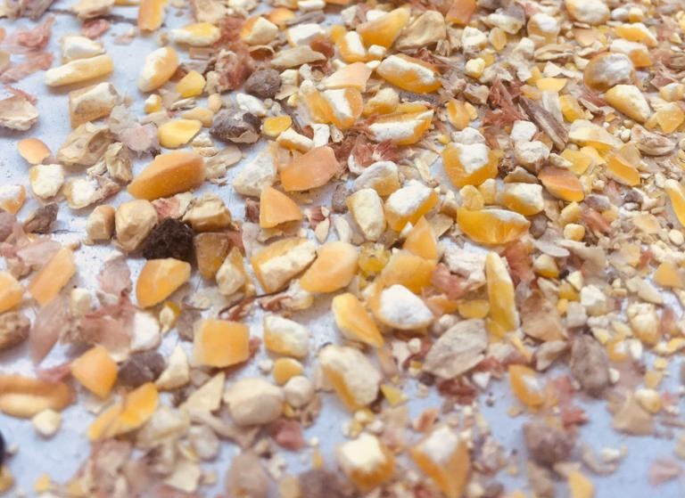
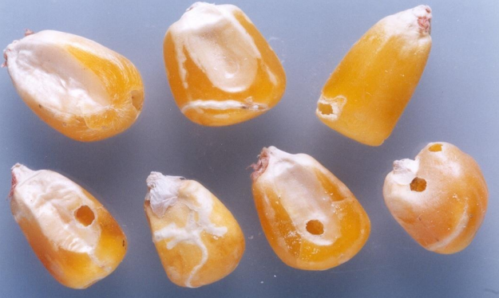
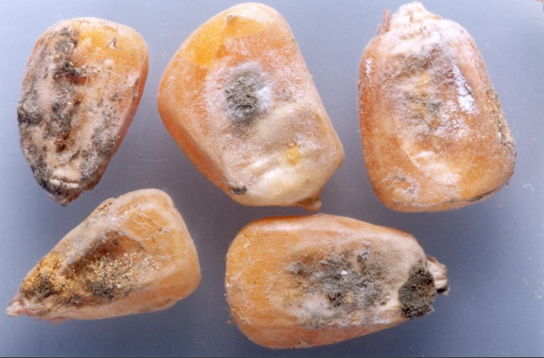

Se clasificarán en este tipo todos aquellos maíces cuyos granos sean de naturaleza córnea, predominantemente vítrea (más de la mitad de la constitución de su endosperma).
Se clasificarán en este tipo todos aquellos maíces cuyos granos sean de naturaleza almidonosa (la mitad ó más de la constitución de su endosperma) y presenten una hendidura pronunciada en la corona.
 Son aquellos en los que se ha iniciado visiblemente el proceso de germinación. Tal hecho se manifiesta por una ruptura de la cubierta del germen, a través de la cual asoma el brote.
Comprende todo grano o pedazo de grano que presente una alteración en su color, como consecuencia de fermentaciones, sin llegar a la descomposición total del mismo.
Comprende todo grano o pedazo de grano que presente una intensa alteración en su color como consecuencia de un estado más avanzado del fermentado, y en muchos casos con ruptura de su pericarpio.
Comprende todo grano o pedazo de grano que ha variado su color natural a blanco opaco, y que muestra en su interior color y aspecto yesoso.
Comprende todo grano o pedazo de grano que presente manchas verdosas o azuladas en el escutelo, producidas por la acción de hongos.
Son aquellos pedazos de granos de maíz que pasen por una zaranda con agujeros de 4.76mm ± 0.013.
Son aquellos que presentan perforaciones causadas por el ataque de insectos o arácnidos.
Se considera como tal a todo lote que presente una elevada proporción de granos que llevan moho adherido en la mayor parte de su superficie.
{kind=link}